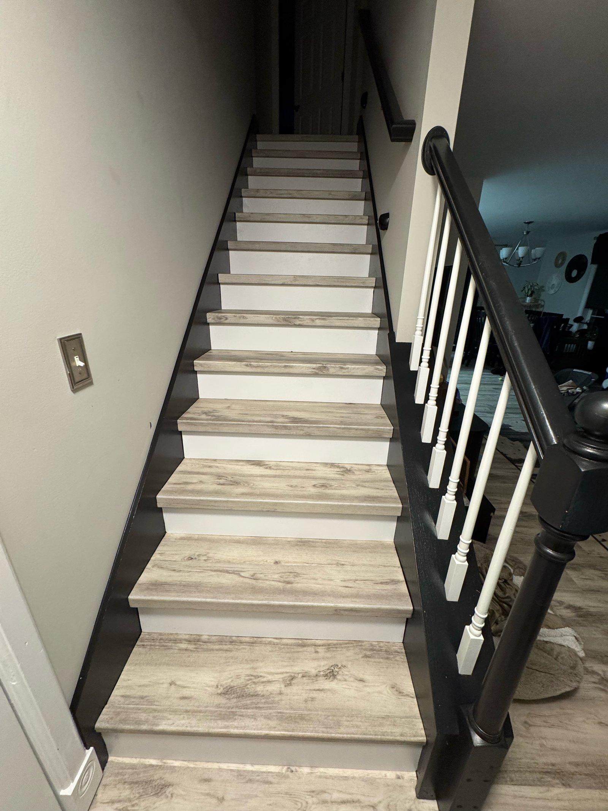
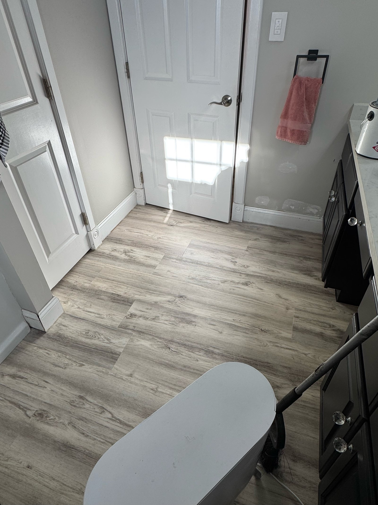

Laminate flooring
Laminate floors
and stairs.
New Leaf installs laminate flooring in Southern Maine homes: rooms, hallways, landings, bathrooms, and stairs. Painting and floor installation can be scheduled as one project.

01
Rooms and landings
Laminate flooring installed through rooms, hallways, and landings.
02
Bathrooms
Laminate floors in bathrooms, fitted around the existing layout.
03
Stairs
Laminate stair treads and risers. On this project the risers are white and the skirt boards are painted dark.



Every job is different, so get a free estimate.